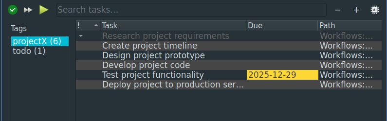

Tasks stay beside the notes that created them.
ZimX keeps tasks inline with your writing, so you never lose the context behind the work. A task is a checkbox, not a separate app. Click the task to go straight to your notes in context.

A task can be as simple as a checkbox.
Write naturally
Drop a checkbox inside a meeting note, add a reminder on a project page, or list steps under a heading. No setup required.
Context stays attached
Every task retains its home: the page, the topic, the surrounding notes, and the links that explain why it exists.
Zoom in when needed
See Today, Upcoming, Overdue, or filter by project, tag, or priority without reorganizing your system.
Dates and priority, when you need them.
Add start dates, due dates, or priority levels when structure helps. ZimX never forces you to use any of it, so you can stay lightweight or go deeper.
Most task apps feel like a machine you have to feed. ZimX feels like a notebook you can trust.